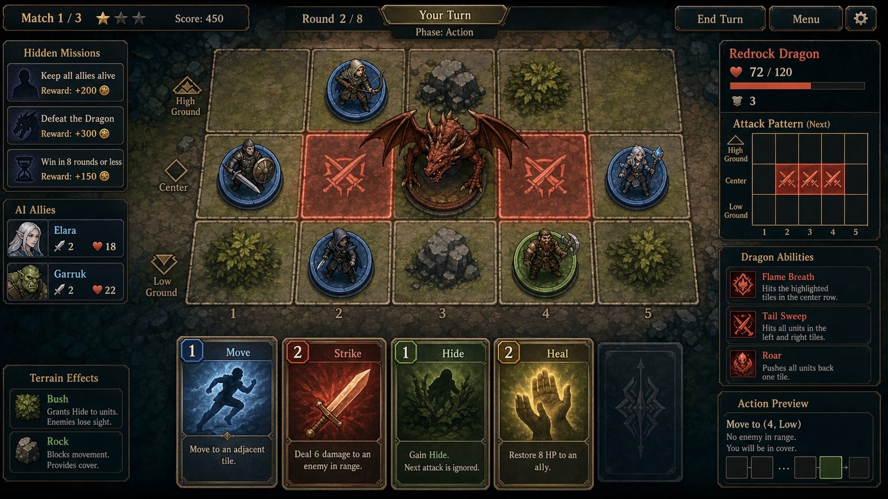

DragonTactics — Game Design Document

- 문서 유형: 게임 기획서 (GDD)
- 문서 버전: 2.0
- 프로젝트 버전: 1.0.1 (근거:
package.json"version": "1.0.1", 코드 직접 확인) - 작성/갱신일: 2026-09-11 (KST)
- git 참조: branch
main, HEAD0303c72e024b3dfc3ab416eebf724658a9a21e71(.git/refs/heads/main직접 열람, 이번 세션은 셸 실행 권한이 없어git log/git status는 실행하지 못함) - 근거 등급 표기: [코드검증] 이번 세션에 소스 파일을 직접 Read해서 확인한 사실 / [문서인용]
docs/DragonTactics_기획서.md등 기존 문서의 서술을 그대로 인용(코드로 재검증하지 않음) / [제안] 이번 문서에서 새로 제시하는 기획 가설 / 미검증(코드에서 확인 안 됨) 근거를 찾지 못해 추측하지 않고 명시적으로 비워둔 항목
참고: 이전 버전 GDD(문서 버전 1.0)는
docs/하위 문서 본문을 열람하지 않은 채 파일명만으로 작성되어 프로젝트 버전을 0.4.0으로 오기재하고 있었다. 이번 개정은docs/DragonTactics_기획서.md,js/*.js,tests/*.test.js를 모두 직접 열람해 재작성한 것이다. 기존 GDD.md 및docs/DragonTactics_기획서.md에는 리비전 색상 마크업(<span style="color:...">)이 없어 보존할 색상 구간이 없었다.gameplay_preview관련 상대 경로 링크도 기존 GDD.md 본문에 없어 보존 대상이 없다(해당 링크는docs/image-resources.md에서만 참조됨).
1. 기획 품질 6요소
- 목표(Goal) — [문서인용/제안] 짧은 세션(10~20분)에서 "드래곤의 다음 공격을 미리 보고, 카드 1장으로 피해를 줄이거나 보상을 챙긴다"는 예측 기반 전술 판단을 명확하게 체감시킨다. (근거:
docs/DragonTactics_기획서.md§2 문제 정의, §6 Preview/Last Result 패널) - 핵심 재미(Core Fun) — [코드검증] 드래곤 카드가
revealed배열로 사전 공개되고(js/state.js,js/engine.js:refillRevealed),getDragonActivationPreview()(js/dragon.js)가 예상 피해를 미리 계산해 보여준 뒤,executeDragonTurn()이 실제 결과를lastActivationSummary(forecastDamage/damageDelta 포함)로 되돌려준다. 즉 "예측 → 대응 카드 선택 → 실제 결과 대조"가 코드로 구현된 핵심 재미 루프다. - 대상 사용자(Target User) — [문서인용] Into the Breach류 격자 전술을 좋아하는 PC 인디 전략 플레이어, 퇴근 후 10~20분 집중 플레이층(
docs/DragonTactics_기획서.md§1, §3). [문서인용]docs/persona_playtest_feedback.md의 페르소나(이승빈/37세 상당, "위험을 계산하고 결과를 미리 보고 싶어하는" 전술 플레이어)와 일치. - 차별점(Differentiation) — [코드검증] 드래곤이 보드 칸을 점유하지 않는 "off-grid" 보스(
js/state.js주석: "Dragon does NOT occupy any board cell"), 공격은 행/열/코너/전체 패턴으로만 전개(js/dragon.js: affectedCells). 아군 AI가 반자동으로 움직이며(js/ally-ai.js) 플레이어는 자신의 카드 선택에 집중한다. - 성공지표(Success Metric) — 미검증(코드에서 확인 안 됨): 실제 리텐션/재도전율 등 라이브 KPI 계측 로직은 코드에서 발견하지 못함. [문서인용]
docs/DragonTactics_기획서.md는 정성적 검증(테스트 통과 수, 포터블 빌드 생존 시간)만 기록하고 있으며 정량 KPI 계측 파이프라인은 문서에도 없음. - 리스크(Risk) — [코드검증] 미션 정의 헤더 주석과 실제 배열 길이가 불일치(§5 참조, 예: 주석 "Common (7)"이지만 실제 8개). 콘텐츠 밸런싱 문서 자동 동기화 부재로 향후 수치 드리프트 위험. [문서인용]
docs/DragonTactics_기획서.md§12에 남은 리스크로 "Steam 앱 ID 480(임시)", "SVG/코드 자산의 PNG 아틀라스 교체 진행 중" 등이 명시됨. [코드검증]js/main.js: showMatchResult는<h2 class="mr-title">매치 ${matchIndex + 1}/3 종료</h2>와matchIndex < 2 ? '다음 매치' : '최종 결과'분기를 고정값 3(과 2)으로 하드코딩하고 있는데, 실제로는showDragonVote()에서 드래곤 처치 목표(targetDragonKills)를 1~5 중 선택할 수 있다(js/main.jsdata-kills="1".."5",js/state.js: createInitialState의Math.max(1, Math.min(5, ...))클램프). 3이 아닌 목표를 선택하면 결과 화면 문구/버튼 분기가 실제 진행 상황과 어긋나는 구현 불일치가 코드로 확인된다.
Core Loop (핵심 루프)
핵심 루프는 6장 "재미 체인(Fun Chain)"에 코드 근거와 함께 이미 정리되어 있다: 드래곤 카드 공개(revealed) → 프리뷰 패널의 예상 피해 계산(getDragonActivationPreview) → 플레이어 대응 카드 선택(executePlayerAction) → 아군 AI 자동 행동(decideAllyAction) → 드래곤 턴 자동 해결(executeDragonTurn, damageDelta 기록) → 미션/보물/페이즈 반영 후 다시 드래곤 카드 공개로 순환. 각 단계의 코드 근거는 6장을 참조.
2. 디자인 필러 (Design Pillars)
- 필러 1 — 완전 공개 정보(Full Information) 전술: [코드검증] 드래곤 카드는
phase개수만큼revealed배열에 미리 노출되고(executeDragonTurn의actions = phase (+storm이면 +1)),resolveRandomizedReveal()이 주사위형 열/행 카드도 공개 시점에 즉시 확정한다. 정보를 숨기지 않고, 그 정보를 활용한 판단력을 시험한다. - 필러 2 — 위치 = 자원: [코드검증] 드래곤 공격 대상 판정(
js/dragon.js: applyPatternCard)과 공격 가능 여부(js/engine.js: canAttackDragonFrom,ATTACK_ROW = 0)가 모두 3×5 보드 위 좌표에 의존한다. 이동 카드 1장의 선택이 방어/공격 기회를 동시에 결정한다. - 필러 3 — 반자동 파티 운영: [코드검증] 플레이어 1명 + AI 아군(
js/ally-ai.js: decideAllyAction)이 함께 싸우며, 종족(Human/Elf/Dwarf/Orc)마다 다른 우선순위 로직(생존→오크 배신 확률 30%→드래곤 처치→협력 치유→패 관리)을 가진다. - 필러 4 — 예측과 결과의 대조 학습: [코드검증]
dragon.lastActivationSummary.damageDelta(예측치 대비 실제 피해 차이)가 상태에 저장되어 다음 판단의 학습 자료가 된다.js/tutorial-scenarios.js의 3개 시나리오(조기/지연/기회상실)가 이 필러를 튜토리얼로 구체화한다.
3. 컴포넌트 표 (역할 / 선택 / 입력→판단→피드백 / 상태)
| 컴포넌트 | 역할 | 선택(플레이어가 고르는 것) | 입력 → 판단 → 피드백 | 상태(코드 근거) |
|---|---|---|---|---|
| 드래곤 카드 프리뷰 패널 | 다음 드래곤 턴의 예상 피해를 시각화 | 대응 카드(이동/방어/공격 등) 1장 선택 | 카드 목록 공개(revealed) → getDragonActivationPreview()가 대상자·예상피해·Shield/Hide 시뮬레이션 계산 → 프리뷰 패널에 대상/피해량 표시 |
[코드검증] js/dragon.js: getDragonActivationPreview |
| 손패(Hand) | 이동/공격/방어/치유/정찰/도발/보물 카드 보유 | 카드 1장 사용 또는 drawTwo/discardAndRedraw/discardAndSwapMissions 액션 |
카드 클릭 → executePlayerAction()이 카드 타입별 함수로 분기 → lastActionEvent로 애니메이션/로그 피드백 |
[코드검증] js/engine.js: executePlayerAction |
| 3×5 보드 | 아군 위치, 드래곤 공격 판정 지형 | 이동 목적지, 공격 대상, 보물 카드의 대상 칸 | 좌표 클릭/선택 → 직교 이동·사거리·공격존(행 0) 검증 → 보드 갱신 + 로그 | [코드검증] js/engine.js: applyMoveCard, canAttackDragonFrom |
| 드래곤 패널(Last Result) | 드래곤 턴 실행 후 실제 결과 표시 | (플레이어 입력 없음, 결과 확인만) | 드래곤 카드 자동 해결 → buildDragonActivationSummary()가 예측 대비 실제 피해/탈락 계산 → Last Result 패널 표시 |
[코드검증] js/engine.js: buildDragonActivationSummary, executeDragonTurn |
| 미션 패널 | 공통/종족 필수·선택 미션 진행률 표시 | 손패 4장 소모로 미션 교체(discardAndSwapMissions) |
매치 시작 시 assignMissions()로 배정 → 액션마다 missionProgress 갱신 → evaluateMission()으로 달성 판정 |
[코드검증] js/missions.js, js/engine.js: MISSION_SWAP_COST = 4 |
| 아군 AI 유닛 | 플레이어 대신 자동으로 행동하는 동료 3명(4인 기준) | (플레이어 선택 없음, 종족별 로직이 자동 결정) | 매 턴 decideAllyAction() 호출 → 생존/배신/처치/협력/패관리 우선순위 트리 판단 → 카드 사용 또는 이동 실행 |
[코드검증] js/ally-ai.js |
| 사운드 레이어 | 행동/드래곤 공격/승패에 대한 청각 피드백 | (없음, 자동 재생) | 액션 이벤트 발생 → sfxAttack/sfxHeal/sfxDragonAttack/sfxPhaseTransition 등 호출 → GameAudioLayer.play(cue)로 OGG 재생 |
[코드검증] js/sound.js, assets/audio/game-audio-layer.js |
4. 콘텐츠 수량 / 유닛 / 해금 조건 / 공급 / 보상 / 변주 요소 (코드 검증)
4.1 종족(4종) — [코드검증] js/races.js
| 종족 | 최대 HP | 추가 드로우 확률 | 공격 피해 보너스 | 공격 사거리 보너스 |
|---|---|---|---|---|
| 인간(human) | 5 | 5% | 0 | 0 |
| 엘프(elf) | 5 | 0% | 0 | +1 |
| 드워프(dwarf) | 6 | 0% | 0 | 0 |
| 오크(orc) | 5 | 0% | +1 | 0 |
- 종족 배정: [코드검증]
js/state.js: startMatch—races[idx % races.length]로 결정론적 라운드로빈 배정(고정, 무작위 아님). - 해금 조건: 미검증(코드에서 확인 안 됨) — 종족은 매치 시작 시 자동 배정되며, 코드 내에서 "해금"을 통해 신규 종족을 얻는 로직은 발견하지 못함(전 종족이 처음부터 사용 가능한 구조로 보임).
4.2 드래곤 타입(5종) — [코드검증] js/dragons.js
| ID | 이름 | 최대 HP | 속성 | 기믹 |
|---|---|---|---|---|
| fire | Fire Dragon | 12 | Flame | 패턴 공격 +1 피해 |
| ice | Ice Dragon | 12 | Frost | 피격 시 카드 1장 버림 |
| venom | Venom Dragon | 12 | Poison | 피격 시 1라운드 중독 |
| storm | Storm Dragon | 12 | Lightning | 드래곤 턴마다 카드 1장 추가 해결 |
| gold | Gold Dragon | 12 | Radiance | 2피해 실드로 시작 |
- 선택 방식: [코드검증]
pickDragonType(seed, matchIndex)가createRng(seed + matchIndex*4099 + 97)로 시드 기반 결정론적 선택(완전 무작위 아님, 시드 고정 시 재현 가능).
4.3 카드(플레이어 덱, js/cards.js: buildPlayerDeck) — [코드검증]
| 카드 타입 | 세부 | 매수 |
|---|---|---|
| 이동(move) | range 2 | 8 |
| 이동(move) | range 3 | 7 |
| 이동(move) | range 4 | 5 |
| 공격(attack) | range 1 | 8 |
| 공격(attack) | range 2 | 5 |
| 공격(attack) | range 3 | 2 |
| 은신(hide) | — | 4 |
| 치유(heal) | — | 3 |
| 정찰(scout) | — | 2 |
| 도발(taunt) | — | 2 |
| 보물(treasure) | sword/potion/cloak/shield/rune/tome 각 1 | 6 |
| 합계 | 52장 |
- 보물 6종 효과: [코드검증]
js/engine.js— sword(드래곤 3피해+처치 미션 갱신), potion(HP 전체 회복), cloak(사거리 1~2 순간이동), shield(다음 피해 1회 무효), rune(다음 카드 보너스 2,runeBonusNext상태만 세팅되고 실제 소비 로직은 이번 세션에서 추가로 확인하지 못함 — 미검증), tome(손패 4장 이하일 때 카드 2장 드로우). - 영웅의 검(sword) 특수 규칙: [코드검증]
pullSwordIfEligible()— 드래곤에 가장 가까운(행 번호가 가장 낮은) 생존 플레이어가 드로우/재드로우 시 discard에 있는 sword를 확정 획득.
4.4 드래곤 카드(공격 패턴 덱, js/dragon.js: DRAGON_CARD_DEFS) — [코드검증]
| 타입 | 매수 | 페이즈 게이트 | 피해(기본, fire면 +1) |
|---|---|---|---|
| rest(휴식) | 3 | 1 | 0 |
| row-attack(행 공격, 주사위) | 5 | 1 | 2 |
| col-attack(열 공격, 주사위) | 4 | 1 | 2 |
| roar(포효, 다음 라운드 플레이어 주사위 -1) | 2 | 1 | 0 |
| corners(코너 4칸) | 1 | 1 | 2 |
| row-odd(테두리 행 0·2) | 2 | 2 | 1 |
| all(전체 공격) | 1 | 2 | 1 |
| row-even(중앙 행 1) | 1 | 3 | 2 |
| frenzy(광란, 전체 공격) | 1 | 3 | 1 |
- 매치 시작 시 실제 사용 덱: [코드검증]
buildDragonCards(1)호출 — 페이즈 1 조건만 포함해 15장(rest3+row-attack5+col-attack4+roar2+corners1)으로 시작. 페이즈 상승 후 2/3단계 카드가 어떻게 덱에 합류하는지는refillRevealed()가state.dragon.deck/discard만 셔플·보충하는 구조이며, phase 2·3 카드가 초기 덱에 아예 포함되지 않는 것으로 보여 미검증(코드에서 명확한 phase 카드 합류 시점을 확인하지 못함). - 페이즈 전환: [코드검증]
maybeTransitionPhase— HP≤8이면 phase 2, HP≤4이면 phase 3 (최대 HP 12 기준). - 드래곤 턴당 해결 카드 수: [코드검증]
phase + (type === 'storm' ? 1 : 0)장.
4.5 미션(총 31개, 공통 8 + 인간 4 + 엘프 5 + 드워프 5 + 오크 9) — [코드검증] js/missions.js
- 실제 배열 길이를 직접 세어 확인: 공통 8개(
common-attack-5~common-pickup-drop-1), 인간 4개, 엘프 5개, 드워프 5개, 오크 9개. - 주의: 소스 코드 주석은 "Common (7)", "Elf (4)"로 적혀 있으나 실제 배열 길이는 각각 8개, 5개로 주석과 실제 데이터가 불일치한다(코드 검증 결과 기준 이 문서는 실제 배열 길이를 채택).
- 배정 방식: [코드검증]
assignMissions()— 종족별 자격 미션 중 셔플 후 첫 번째를 필수, 그 다음requiredOnly가 아닌 것 중 하나를 선택으로 배정. - 점수/보상: [코드검증]
scoreMatch()— 필수 미션 성공 시 해당 포인트, 선택 미션 성공 시 해당 포인트, 드래곤 최종 타격자(finisher) +3, 생존자 +1. 실제 게임 내 재화(골드/젬 등) 교환 로직은 미검증(코드에서 확인 안 됨) — 미션 점수가 화면 밖 메타 재화로 전환되는 로직은 발견하지 못함.
4.6 보물 드롭(공급) — [코드검증] js/engine.js
- 드래곤 HP가 10/8/6/4/2 임계값을 하향 돌파할 때마다 시드 기반 RNG로 보드 임의 칸에 보물 1개 드롭(
DROP_THRESHOLDS,DROP_TREASURES6종). - 드롭은 해당 칸을 드래곤이 다시 공격하면 소각(
burnDropsInCells)되므로 즉시 회수가 유리하도록 설계됨. - 매치 진행: [코드검증]
state.js: createInitialState—targetDragonKills는 1~5 사이로 클램프(기본값 3). [문서인용]docs/DragonTactics_기획서.md는 "3매치 토너먼트"로 서술. - 라운드 상한: [코드검증]
checkMatchEnd—state.round > 30이면'timeout'으로 매치 강제 종료.
5. 플레이 세션 길이별 설명
- 30초: [코드검증 기반 제안] 드래곤 카드 공개(
revealed) 확인 → 프리뷰 패널에서 예상 피해자/피해량 확인 → 손패 1장을 골라 이동 또는 방어 카드를 사용하는 한 번의 판단 사이클.js/tutorial-scenarios.js의 "조기 활성화" 시나리오가 이 30초 단위 학습을 그대로 담고 있다. - 5분: [제안] 한 라운드 내 전원의 턴 진행(
rollTurnOrder→ 각 플레이어/아군 행동 →executeDragonTurn) + 페이즈 전환 관찰 1~2회. 보물 드롭 1개 정도를 회수하는 정도의 진행. - 30분: [문서인용/제안]
docs/DragonTactics_기획서.md가 명시한 "타깃 세션 10~20분"에 근접한 길이로, 드래곤 1마리를 처치(dragon-dead)하거나 파티가 전멸(party-wipe)하는 한 매치 전체를 완주하는 분량. - 장기 세션: [코드검증 기반 제안]
targetDragonKills(최대 5)만큼 여러 매치를 이어서 진행하는 토너먼트 모드.matchScores배열이 매치별 점수를 누적하므로, 여러 판의 미션 성과를 비교하며 플레이하는 장기 루프가 가능하다.
6. 재미 체인 (Fun Chain)
[코드검증 기반 서술]
드래곤 카드 공개(revealed)
→ 프리뷰 패널이 예상 피해자·피해량 계산 (getDragonActivationPreview)
→ 플레이어가 손패에서 대응 카드 1장 선택 (이동/방어/공격/보물 등)
→ executePlayerAction()이 카드 효과를 즉시 반영 (보드/HP/미션 진행)
→ 아군 AI가 자신의 우선순위 트리로 자동 행동 (decideAllyAction)
→ 드래곤 턴 자동 해결 (executeDragonTurn), lastActivationSummary에
forecastDamage 대비 damageDelta 기록
→ Last Result 패널에서 "예측이 맞았는가"를 확인
→ 미션 진행률·보물 드롭·페이즈 전환을 반영해 다음 판단으로 순환
이 체인의 동력은 "정보를 이미 다 봤는데도 내 선택이 최선이었는가"를 매 라운드 확인시키는 데 있다 — 이는 §2 필러 4와 직결된다.
7. 실제 플레이 예시 2개 (코드/데이터 기반)
예시 1 — 조기 대응으로 피해를 절반으로 줄이기 (js/tutorial-scenarios.js: dragon-timing-early)
- 시드 4101, 초기 드래곤 카드
row-attack(rowIndex 0, 행 0 전체 공격). - 플레이어 위치
{r:0, c:1}— 정확히 위협 행 위에 서 있음. - 프리뷰:
expectedPreview.totalExpectedDamage = 1, 대상P0에게 1피해 예상하되mitigation: 'hide'— 즉 은신(hide) 카드를 미리 쓰면estimateDamageForPlayer()로직상 1피해를 0으로 만들 수 있음이 프리뷰에 이미 반영됨. - 결과(
expectedSummary): 실제로도 P0가 1피해를 받는 것으로 기록(시나리오상 대응하지 않았을 때의 기준값). 교훈(코드 원문): "Use the visible dragon card before activation to spend hide or move early, reducing a row hit before damage lands."
예시 2 — 영웅의 검으로 최종 타격 미션 달성 (js/engine.js: applyTreasureSword + js/missions.js: human-kill-dragon)
- 인간 종족 플레이어가 드래곤에 가장 가까운(행 번호 최소) 위치에서 재드로우(
applyDiscardAndRedraw)를 실행하면,pullSwordIfEligible()이 discard 더미에 있던sword보물을 확정으로 손패에 지급한다. - 드래곤 HP가 3 이하일 때
sword를 사용(applyTreasureSword)하면 3피해를 입혀dragon.hp를 0으로 만들고,attacker.missionProgress.killedDragon = true가 설정된다. - 이 시점에 인간 종족 필수/선택 미션 중
human-kill-dragon(5점)이evaluateMission()에서mp.killedDragon === true로 충족되며, 매치 종료 시scoreMatch()가 5점 + finisher 보너스 3점 + 생존 보너스 1점(생존 시)을 합산한다.
8. 피로도 / 실패 완화 장치
- [코드검증] Shield(방패 실드):
damagePlayer()에서statusEffects.shieldActive가 있으면 피해를 0으로 만들고 1회 소모. - [코드검증] Hide(은신):
hiddenThisRound상태로 이번 라운드 피해 1을 경감(완전 무효화 아님,Math.max(0, dmg - 1)). - [코드검증] Potion(물약): 즉시 최대 HP까지 전체 회복.
- [코드검증] Heal(치유) 카드: 인접 아군 또는 자신 HP 1 회복, 아군 AI도 인접 부상자를 우선 치유(
decideAllyActionpriority 5). - [코드검증] 아군 AI 생존 우선순위: HP≤1이면 치유/물약/은신을 최우선 시도(
decideAllyActionpriority 1) — 플레이어가 아군을 세세히 관리하지 않아도 즉사 위험을 어느 정도 자동 완화. - [코드검증] 라운드 종료 시 임시 상태 초기화:
clearRoundStatus()가hiddenThisRound,tauntThisRound,poisoned를 매 라운드 리셋 — 상태이상이 무한 누적되지 않음. - [코드검증] 미션 교체(구제 장치): 손패 4장을 소모해 언제든 미션을 재배정(
discardAndSwapMissions) — 불리한 미션 조합을 받았을 때 탈출구. - 미검증(코드에서 확인 안 됨): 매치 패배(파티 전멸) 이후 별도의 "패배 완화 보상"(예: 부분 재화 지급) 로직은 발견하지 못함 —
scoreMatch()는 생존 여부와 무관하게 미션/finisher 조건만 채점.
9. 경제 / 성장 / 밸런스 레버
- [코드검증] 덱 크기와 카드 비율: 이동 20장 / 공격 15장 / 은신 4장 / 치유 3장 / 정찰 2장 / 도발 2장 / 보물 6장(총 52장) — 이동·공격 비중이 압도적으로 높아 "이동해서 공격존(행 0) 도달"이 기본 전략축.
- [코드검증] 레이스 보너스: 오크(+공격피해), 엘프(+사거리), 드워프(+최대HP), 인간(+5% 추가 드로우) — 4종족이 서로 다른 축(딜/사거리/생존력/자원)으로 밸런싱됨.
- [코드검증] 드래곤 HP 12 고정 + 페이즈 임계값(8/4): 모든 드래곤 타입이 동일한 HP·페이즈 구조를 공유하고, 타입별 기믹(피해+1, 카드버림, 중독, 추가행동, 초기실드)만 차별화 — 콘텐츠 확장 시 신규 드래곤 타입 추가가 상대적으로 저비용.
- [코드검증] 드롭 임계값(10/8/6/4/2): 드래곤 HP를 깎을수록 더 자주 보상이 나오는 구조(임계값 간격이 일정, 후반으로 갈수록 남은 HP 대비 드롭 빈도가 상대적으로 높아짐).
- [코드검증] 미션 스왑 비용 4장: 손패 크기(카드 대부분의 액션이 손패 3장 유지형인 것과 비교해) 상대적으로 비싼 비용으로 설계되어 남용을 억제.
- [코드검증] RNG 시드 결정론:
createRng(seed + ...)패턴이 카드 셔플, 드래곤 선택, 드롭 위치, 턴 순서 전반에 사용되어 동일 시드에서 재현 가능한 매치 진행 — 밸런스 튜닝/회귀 테스트에 유리. - 미검증(코드에서 확인 안 됨): 실제 화폐/젬 등 메타 경제, 상점, 카드 강화 시스템은 코드에서 발견하지 못함.
10. 온보딩 / UI·HUD 5단계 상태 / 접근성 / 오디오비주얼
10.1 UI 상태 5단계 (코드/문서 근거 기반)
- 드래곤 카드 공개(프리뷰) 상태 — [코드검증]
revealed배열과getDragonActivationPreview()결과를 표시. [문서인용]docs/DragonTactics_기획서.md§7: "위협 데칼: 토큰, HP, 보상, 피해 숫자보다 낮은 레이어에 배치." - 플레이어 행동 선택 상태 — [문서인용] "플레이어의 주요 행동 선택은 카드 사용 또는 이동 계열 행동 1개로 제한."
- 행동 실행/애니메이션 상태 — [코드검증]
lastActionEvent가 각 액션(move/attack/hide/heal/scout/taunt/treasure/draw/redraw/mission)마다 생성되어 UI 애니메이션 트리거로 쓰일 수 있는 구조. - 드래곤 턴 실행 결과(Last Result) 상태 — [코드검증]
dragon.lastActivationSummary(forecastDamage/damageDelta/affectedPlayers) 표시. - 매치 종료/결과 상태 — [코드검증]
checkMatchEnd()가'dragon-dead' | 'party-wipe' | 'timeout' | null반환,scoreMatch()가 최종 점수 산출.
10.2 접근성
- [문서인용]
docs/DragonTactics_기획서.md§7: "버튼 최소 44px 클릭 영역 보장", "긴 텍스트는 패널 안에서 줄바꿈하되 보드 위 핵심 수치를 가리지 않는다." - [코드검증]
tests/layout-css.test.js존재 — 레이아웃/텍스트 크기 관련 계약 테스트가 있음을 파일 확인(테스트 본문 상세 내용은 이번 세션에서 추가로 읽지 않음). - [문서인용] v0.6.1 변경 이력:
.self-label/.cell-hp에 0.56rem~0.72rem 반응형 clamp,tabular-numsHP 숫자 표기, 라벨 비중첩 계약 테스트 4종 추가. - 미검증(코드에서 확인 안 됨): 색맹 대응(색상 외 아이콘 병기), 스크린리더용
aria-*속성 적용 여부는 이번 세션에서 CSS/HTML 본문까지 열람하지 않아 확인하지 못함.
10.3 오디오비주얼 피드백
- [코드검증]
js/sound.js가 노출하는 큐:sfxAttack(action_primary),sfxHeal(recovery),sfxDragonAttack(danger_warning),sfxPhaseTransition(transition),sfxCardDraw/sfxClick(ui_click),sfxCardPlay(action_primary),sfxVictory(result_success),sfxDefeat(result_failure),sfxMove(action_primary). - [코드검증] 실제 오디오 자산:
assets/audio/generated/에result_success.ogg,result_failure.ogg,ui_click.ogg,recovery.ogg,transition.ogg,danger_warning.ogg,action_primary.ogg등 Kenney CC0 OGG 파일 존재. - [문서인용] v0.6.0 변경 이력: BGM은 첫 신뢰된 사용자 제스처 이후 시작, 탭 비가시 상태에서 자동 일시정지/재개, SFX 동시 재생 8개 상한, 위험/결과 신호가 BGM을 약 350ms 덕킹.
11. 구현됨 / 계획됨 / 제안 단계 구분
구현됨 (코드로 직접 확인)
- 3×5 보드, off-grid 드래곤, 행/열/코너/전체 공격 패턴 (
js/dragon.js,js/state.js) - 4종족(인간/엘프/드워프/오크) 스탯 차등 (
js/races.js) - 5종 드래곤 타입과 시드 기반 선택 (
js/dragons.js) - 52장 플레이어 카드 덱, 보물 6종 (
js/cards.js,js/engine.js) - 드래곤 카드 프리뷰/실제결과 대조(
forecastDamage/damageDelta) (js/engine.js,js/dragon.js) - 미션 시스템(공통 8+인간 4+엘프 5+드워프 5+오크 9=31개), 미션 교체 비용 4장 (
js/missions.js,js/engine.js) - 보물 드롭(HP 임계값 5단계) 및 드래곤 공격에 의한 드롭 소각 (
js/engine.js,js/dragon.js) - 아군 AI 우선순위 트리(생존/오크 배신 30%/처치/협력/패관리) (
js/ally-ai.js) - 페이즈 전환(HP≤8, ≤4) 및 폭풍 드래곤 추가 행동 (
js/engine.js) - 사운드 큐 매핑과 실제 OGG 자산 (
js/sound.js,assets/audio/generated/) - Node 내장 테스트 러너 기반 테스트 스위트:
tests/폴더에 24개.test.js파일 존재를 직접 확인(dragon-ai, missions, missions.scoring, races, rng, smoke, cards, state, ally-ai, engine.movement/utility/treasures/combat/dragon/flow, action-event, mission-reveal, dragons, dragon-timing-scenarios, render-assets, electron/httpServer, sound, layout-css, release-metadata). 주의: 이번 세션은 셸 실행 권한이 없어npm test를 직접 실행하지 못했다.docs/DragonTactics_기획서.md(문서인용, 미실행 확인)는 "npm test 192/192 통과(2026-09-11 기준)"를 주장하지만, 이 문서 작성자가 직접 재현/검증한 수치는 아니다.
계획됨 (기존 문서에 명시, 아직 코드로 재검증하지 않음)
- [문서인용] Electron/electron-builder 기반 NSIS·Portable Windows 빌드, Steam(steamworks.js) 통합 —
package.json의build/optionalDependencies존재는 코드로 확인했으나 실제 Steam 앱 ID는 여전히 개발용 480(docs/DragonTactics_기획서.md§8.3,electron/main.cjs: STEAM_APP_ID = 480)이라는 서술은 문서인용+코드검증(상수값 자체는 코드검증). - [문서인용]
docs/DragonTactics_기획서.md§12 "결과 설명 강화 — 왜 이 피해가 들어왔는가를 리플레이하는 기능" —damageDelta수치는 이미 코드에 있으나, 이를 사람이 읽는 문장으로 리플레이하는 UI는 미검증(코드에서 확인 안 됨). - [코드검증] Steam 업적 15종 미배선:
docs/steam-achievements.md에ACH_FIRST_BLOOD,ACH_TUTORIAL_DONE,ACH_ALL_RACES등 15개 업적과STAT_GAMES_PLAYED등 7개 통계가 정의되어 있고,electron/preload.cjs(steamAchievement.unlock/isUnlockedcontextBridge 노출)와electron/main.cjs(ipcMain.handle('achievement:unlock', ...),steam.achievement.activate(id))에 IPC 배선까지는 존재한다. 그러나js/게임 로직 전체를 검색한 결과steamAchievement.unlock(또는steamAchievement.호출이 0건이다 — 즉 "언제 어떤 업적을 실제로 해제할지" 게임 로직과의 연결이 전혀 구현되어 있지 않다. IPC 배선은 구현됨(Implemented)이지만 업적 트리거 자체는 계획됨(Planned)으로 분류한다.
제안 (이번 문서의 신규 가설, 미구현)
- [제안] §1의 정량 KPI(재도전율, 첫 3판 완료율 등) 계측 파이프라인 신설.
- [제안] 미션 정의 파일의 헤더 주석(§4.5에서 지적한 "Common (7)", "Elf (4)")을 실제 배열 길이(8, 5)에 맞춰 수정해 코드-주석 드리프트를 제거.
- [제안]
runeBonusNext상태가 실제로 어느 카드 효과에서 소비되는지 코드 경로를 추가로 추적해 문서화(§4.3에서 미검증으로 남긴 항목).
12. 다음 우선순위 3가지
- [코드검증 기반 제안]
js/main.js: showMatchResult의 "매치 X/3" 하드코딩 수정. 드래곤 처치 목표(targetDragonKills, 1~5 선택 가능)와 무관하게 결과 화면이 항상 "/3"과matchIndex < 2분기를 사용한다(§1 리스크 참조). 3이 아닌 목표를 고른 플레이어에게 잘못된 진행 정보를 보여주는 실사용 버그이므로 최우선으로 수정한다. - [코드검증 기반 제안] Steam 업적 15종의 실제 트리거 연결.
docs/steam-achievements.md에 정의된 업적/통계가 IPC까지는 배선되어 있으나(§11)js/게임 로직에서 호출되는 지점이 0건이다.missionProgress,dragonKills,matchScores등 이미 존재하는 상태값에 업적 조건을 연결해야 Steam 출시 시 업적이 실제로 동작한다. - [제안]
npm test를 실제로 실행해 통과/실패 수를 이 문서에 [코드검증]으로 반영하고, 미션 정의(js/missions.js)의 헤더 주석-실제 배열 길이 불일치(공통 7→8, 엘프 4→5, 오크 8→9)도 함께 정리한다. 이번 세션은 셸 권한이 없어docs/DragonTactics_기획서.md가 주장하는 "192/192 통과"를 직접 재현하지 못했다.
13. 근거 노트 (섹션별 참조 파일)
- 버전/스택/시작 명령:
C:\Development\10_DT\package.json,C:\Development\10_DT\AGENTS.md - 기존 기획 서술(문제 정의, 페르소나, UI 규칙, 변경 이력, IARC, 플랫폼):
C:\Development\10_DT\docs\DragonTactics_기획서.md - 종족 스탯:
C:\Development\10_DT\js\races.js - 드래곤 타입:
C:\Development\10_DT\js\dragons.js - 드래곤 카드/패턴/프리뷰/피해계산:
C:\Development\10_DT\js\dragon.js - 플레이어 카드 덱/드로우:
C:\Development\10_DT\js\cards.js - 미션 정의/배정/채점:
C:\Development\10_DT\js\missions.js - 매치 초기화/보드/시작 상태:
C:\Development\10_DT\js\state.js - 턴 진행, 카드 액션 해석, 드롭, 페이즈 전환, 매치 종료 조건:
C:\Development\10_DT\js\engine.js - 아군 AI 의사결정:
C:\Development\10_DT\js\ally-ai.js - 드래곤 AI(현재는 트리비얼):
C:\Development\10_DT\js\dragon-ai.js - 타이밍 튜토리얼 시나리오 3종:
C:\Development\10_DT\js\tutorial-scenarios.js - 사운드 큐/오디오 자산:
C:\Development\10_DT\js\sound.js,C:\Development\10_DT\assets\audio\generated\ - 리소스/HUD 레이어 규칙:
C:\Development\10_DT\docs\image-resources.md - 이전 검증 로그(테스트 통과 이력 문서 인용):
C:\Development\10_DT\docs\next_improvement_instruction.md,C:\Development\10_DT\docs\persona_playtest_feedback.md - 테스트 파일 존재 목록(24개, 본문 미실행):
C:\Development\10_DT\tests\*.test.js,C:\Development\10_DT\tests\electron\httpServer.test.js - git 참조:
C:\Development\10_DT\.git\refs\heads\main(내용0303c72e024b3dfc3ab416eebf724658a9a21e71),C:\Development\10_DT\.git\HEAD(ref: refs/heads/main) - 매치 결과 화면 하드코딩("매치 X/3") 및 드래곤 처치 목표 선택 UI:
C:\Development\10_DT\js\main.js(showMatchResult,showDragonVote,showStartScreen) - Steam 업적 미배선 확인(설계 문서 vs 실제 호출 0건):
C:\Development\10_DT\docs\steam-achievements.md,C:\Development\10_DT\electron\preload.cjs,C:\Development\10_DT\electron\main.cjs;C:\Development\10_DT\js\전체를steamAchievement문자열로 검색해 게임 로직 내 호출 0건을 확인. - 오디오 자산 실물 확인:
C:\Development\10_DT\assets\audio\generated\디렉터리 목록(OGG 8개 + 라이선스 파일 확인).